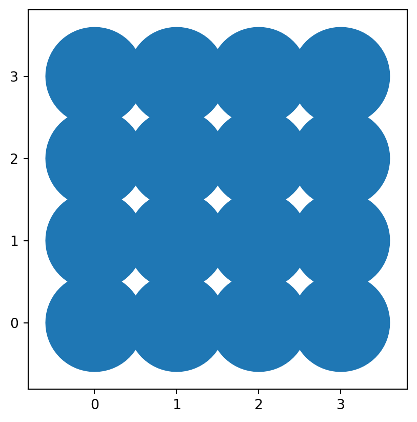
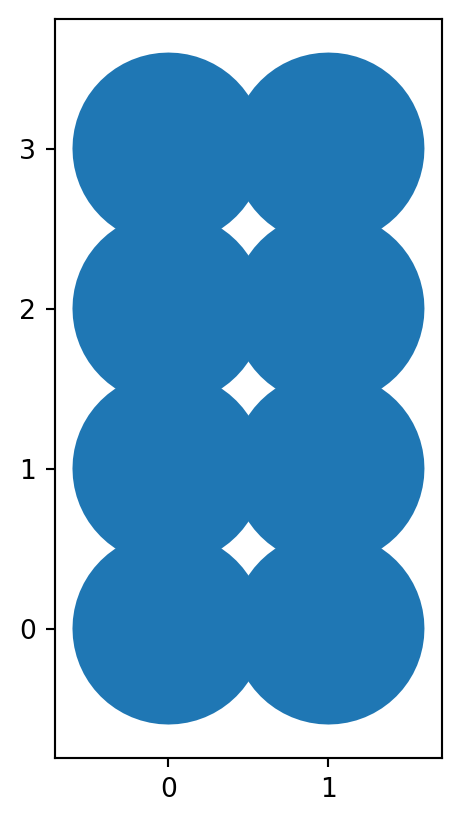
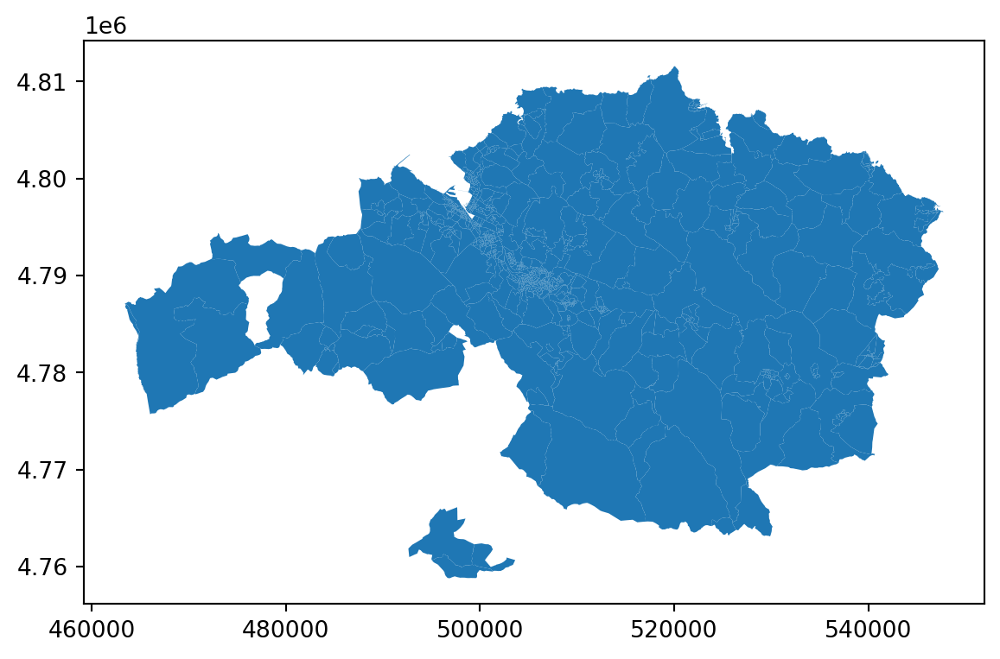

a_variable = 'boo'
print(a_variable)booFebruary 21, 2024
Computation, once too theoretical, expensive, and technical to be of use outside of highly specialised realms and big budget tech firms has become accessible to almost anyone with a computer. At the heart of this is the concept of computation itself; a process that enables us to perform calculations and solve problems by systematically following a series of steps. This concept has evolved dramatically over the centuries, from the abacus to the sophisticated digital computers that permeate our modern lives to open source software and the recent emergence of LLM AI tools such as ChatGPT.
Two pivotal figures in the history of computation are Alan Turing and John von Neumann, whose groundbreaking work laid the foundational principles on which modern computers are based.
Alan Turing introduced the concept of the Turing machine in 1936. This is an abstract device conceived to encapsulate the underlying essence of computation. Turing’s machine can, in theory, simulate any other machine’s computation process, thus providing a universal model for computing. Turing’s work during World War II on breaking the Enigma code is also celebrated for its profound impact on the outcome of the war and the field of cryptography.
John von Neumann, contributed significantly to the development of architecture the digital computer and was instrumental in the development of some of the earliest computers. An engaging review of this early history can be found in the book Turing’s Cathedral.
Early programming languages, some of which are still in use today, were very “low-level” languages, meaning they operated closer to the hardware level, directly manipulating the machine’s memory and processing capabilities. This required programmers to have a deep understanding of the hardware they were working on. This allowed for precise control over the computer’s hardware, enabling optimizations that can significantly improve the performance and efficiency of the code. However, writing in these languages is time-consuming and prone to errors because it requires managing numerous highly complex details related to the hardware.
The necessity for low-level programming languages stemmed from the need to maximize the performance of early computers, which had very limited processing power and memory compared to today’s standards. Low-level languages are still used for specialised or performance critical purposes, but they are complete overkill for the great majority of everyday use-cases because their complexities can make it very difficult to learn the languages or to use them productively.
Enter Python!
Python, created by Guido van Rossum and released in 1991, is a high-level, interpreted programming language known for its simplicity and readability, making it ideal for beginners and experienced programmers alike. It offers an easy-to-use syntax that lends itself to clear and readible code that is easier to development and maintain. Python has evolved over time and is now at version 3. Its extensive standard library is mature and it has a vast ecosystem of third-party packages making it an ideal choice for applications such as data analysis, geospatial analysis, and scientific computing.
Some tips:
Don’t get distracted by arguments of performance. People will sometimes talk about how one language outperforms another, but in reality the most important aspect is the usability, versatility, and speed of development. Python itself is a so-called “slow” language but it wraps highly optimised and very performant packages under-the-hood, so it can offer the best of both worlds.
Python is more verstaile than the R language, which is sometimes popular with dedicated academics, statisticians, or geographers.
In the past, one of the initial hurdles for beginners learning Python is the process of setting up a development environment. This involves installing Python, managing dependencies, and configuring an Integrated Development Environment (IDE) or a code editor. Each of these steps comes with its own set of challenges, from dealing with system path variables to understanding virtual environments for managing project-specific dependencies without conflicts.
Jupyter Notebooks bypass this initial complexity and let us get straight to the fun parts. Notebooks provide an interactive computing environment that combines automated code execution with rich text elements, making it an excellent tool for learning, sharing, and storytelling with data. Anaconda + JupyterLab is a great way to get started with Python, and we recommend staying with these for the time being. That said, those of you who would like to become more proficient Python users over time will benefit from using a more structured Python development environment (when the time is right!).
Roughly ten years ago, resources such as Stack Overflow were indispensible. However, Stack Overflow has been recently been usurped by Large Language Models such as ChatGPT, which are excellent and reading, debugging, and suggesting code. Note, however, that as useful as these can be, they can still ‘miss-the-mark’ or hallucinate, in which case you’ll need to roll up your sleeves and do things the old-fashioned way. LLMs are going to make your life much easier, but they could also make you lazy or over-confident…!
In class, we’ll point you to a Github Repository where you can post your issues and we’ll try to help you. This is for when you need help setting up customised workflows or run into tricky situations. Please do try to use Stack Overflow and ChatGPT as a first port of call.
Fire up your JupyterLab and follow along by typing and executing these examples. You can hover over a cell and click the copy icon to copy the code.
Python works with variables which store references to information. These variables can be named so that they are easy to remember and should be descriptive so that they make their purpose clear. By convention, variables in Python use lower caps with underscores and should not start with a number. An exception is class names, which typically start with a capitalised letter.
Notice that these variable names don’t tell us very much:
But these ones do:
You should also use comments to explain your code, this becomes important as the code grows in complexity. Use a hash symbol for a line comment and triple quotes for block comments.
Another concept is the use of functions. Functions take parameters (arguments) and return a result according to a defined sequence of steps. In certain contexts they are also referred to as “methods” (in the context of “classes”, but don’t worry too much about that for now). A commonly used function in Python is print(). Notice that a function has parentheses, and this is where you pass your function arguments.
# you can pass a parameter to print()
# it will then take the parameter and print it to the screen
print('This will print boo!')
# the same for a variable
print(temp_diff)
# and in the case of the print() method
# multiple arguments can be passed at once
# function arguments are separated with commas
print('The temp diff is:', temp_diff)This will print boo!
13
The temp diff is: 13You can define a function using the def keyword. Let’s define a function which takes a number and multiplies it by a specified multiplier.
# you must use "def"
# define your parameters
def num_multiply(a_number, the_multiple):
# note the use of indented lines
multiplied_number = a_number * the_multiple
# you must return a value if you want to use
# it outside of the function
return multiplied_number
# let's try it out
# assign the returned value to a variable
out_num_a = num_multiply(2, 2)
print('2x2=', out_num_a)
# functions save us from rewriting the
# same bits of code over and over...
# we can use the same logic with new arguments
out_num_b = num_multiply(3, 10)
print('3x10=', out_num_b)2x2= 4
3x10= 30If you find yourself writing bits of code which seem repetitive, then you probably want to be using functions…!
Variables can store different kinds of data, including str, int, float (decimal), and other types such as “booleans” (True and False) and None types. If you want to find out what type a variable is, you can use the built-in type() method, which will tell you what type a given variable is.
# here we are nesting methods
# the type() method will run first and returns a result
# this result is then passed to the print() method
print(type(a_variable))
print(type(temp_diff))
print(type(1))
print(type(1.0))
print(type(True))
print(type(None))<class 'str'>
<class 'int'>
<class 'int'>
<class 'float'>
<class 'bool'>
<class 'NoneType'>Once you’ve assigned a value to a variable, you can use this variable to do things like maths (in the case of int or float types).
temp_day_1 = 21
temp_day_2 = 34
print('added:', temp_day_1 + temp_day_2)
print('subtracted:', temp_day_2 - temp_day_1)
print('divided:', temp_day_2 / 2)
# modulo gives the remainder after division
print('modulo:', temp_day_1 % 2)added: 55
subtracted: 13
divided: 17.0
modulo: 1It is a good idea to become familiar with Python Operators: these will become second nature over time. Here are some examples:
# you can assign new values to existing variables
my_var1 = 5
my_var1 = my_var1 + 10
print('addition', my_var1)
# assignment operators can be combined with arithmetic
my_var2 = 5
my_var2 += 10
print('increment', my_var2)addition 15
increment 15Checking for equality is done with double equal signs.
print('checks equal:', my_var1 == my_var2)
print('checks equal:', my_var1 == 'boo')
# returns True if not equal, otherwise False
print('checks not equal:', my_var1 != my_var2)
print('checks not equal:', my_var1 != 'boo')checks equal: True
checks equal: False
checks not equal: False
checks not equal: TrueUse “is” when checking for booleans or None types.
none_var = None
print('checks None:', none_var is None)
none_var = 'boo'
print('checks None:', none_var is None)
bool_var = True
print('checks True:', bool_var is True)
bool_var = False
print('checks True:', bool_var is True)checks None: True
checks None: False
checks True: True
checks True: FalsePay attention to operator precedence, use brackets to make your intentions explicit.
precedence a: 52
precedence b: 60You can do surprising things with strings as well.
part_1 = 'Hello'
part_2 = 'there!'
# here we'll combine the parts using an empty space
together = part_1 + ' ' + part_2
print(together)
# there are a large number of built-in methods for strings
# here are a few examples
print(part_1.lower())
print(part_1.upper())
print(part_1.lstrip('H'))
print('str len:', len('what is the length of a piece of string?'))Hello there!
hello
HELLO
ello
str len: 40Python has some other types that can be useful. One of these is lists, which use square brackets to collect several items into the same variable.
my_list = [1, 2, 3, 4]
# the built-in len() method gets the length of a list
print('number of items:', len(my_list))
# use square brackets to index into a list
# in Python, lists are zero indexed
get_something = my_list[0]
print('first item:', get_something)
# gets the last item
get_something_else = my_list[-1]
print('last item:', get_something_else)
# gets list entries from index 0 to before index 2
get_several_things = my_list[0:2]
print('several items A:', get_several_things)
# which happens to be the same as this
get_several_things = my_list[0:-2]
print('several items B:', get_several_things)
# and this
get_several_things = my_list[-4:-2]
print('several items C:', get_several_things)
# let's add something to the list
my_list.append(5)
print('more items:', my_list)number of items: 4
first item: 1
last item: 4
several items A: [1, 2]
several items B: [1, 2]
several items C: [1, 2]
more items: [1, 2, 3, 4, 5]You can use in and not in syntax to check if something is inside a list. This will return a bool, and if this evaluates to True then it will execute the indented code.
# you can check if things are in a list
if 2 in my_list:
print('yes, 2 is in my_list')
if 5 in my_list:
print('not gonna see this!')
if 5 not in my_list:
print('you will see this!!')yes, 2 is in my_list
not gonna see this!Note that you can iterate over lists using for and in syntax. For each loop of the iteration, the value at that iteration is assigned to a variable, which we are here calling num. We can then use that variable to do something.
# this will print each number in my_list
for num in my_list:
# note the indented line
# indentation has to be used consistently
print('num is currently:', num)num is currently: 1
num is currently: 2
num is currently: 3
num is currently: 4
num is currently: 5Python has a number of built-in convenience functions, which can simplify common tasks:
# these will return the min and max values
print('min:', min(my_list))
print('max:', max(my_list))
print('min:', min('zfs'))
print('max:', max('zfs'))min: 1
max: 5
min: f
max: z# you can cast types from one to another
# ...within reason
print('now an int:', int(4.0))
print('loses decimal:', int(4.5))
print('now a float:', float(4))
print('this works:', str(3))now an int: 4
loses decimal: 4
now a float: 4.0
this works: 3# uncomment to run
# print('this wont work': int('a'))
# some more built-in functions
# note the extra step to cast the output
print('without cast', reversed(my_list))
print('with cast:', list(reversed(my_list)))
print('absolute:', abs(-100))without cast <list_reverseiterator object at 0x7fe870f39390>
with cast: [5, 4, 3, 2, 1]
absolute: 100Python can import packages which contain reusable code.
Packages have to be installed before they are used, unless they are part of the default Python library. Note that this method of installing a package with a leading exclamation mark is particular to JupyterLab Notebooks, and only has to be done if the package is not yet installed.
Once installed and available, we can use modules provided by the package. Here we are using the from and import syntax to import the geometry module which is available from the shapely package.
shapely let’s us do some neat things with spatial information. Let’s define a Point type using the geometry module. The geometry module has some already defined methods which we can call. Let’s use the Point constructor to generate a new point. Note the use of dot-notation.
# this creates a point using the Point constructor
# defined by the geometry module
point_a = geometry.Point(0, 0)
print(point_a)
print(type(point_a))POINT (0 0)
<class 'shapely.geometry.point.Point'>Different packages and modules define set patterns of behaviour. To understand what these are and what you can do with them, refer to the package documentation. If it is a widely used package with a lot of public examples, then you can ask ChatGPT to help you. Some packages are better documented than others. In the case of shapely, here is a link to the official documents.
Alternatively, you can use the built-in help() method which will tell you more about a module or class’ functionality.
For example, a shapely Point type has built-in methods which allow you to easily produce certain forms of behaviour. You can access these using dot-notation. Let’s buffer the point object using the provided buffer() method.
POLYGON ((10 0, 9.95184726672197 -0.980171403295606, 9.807852804032304 -1.9509032201612824, 9.569403357322088 -2.902846772544623, 9.238795325112868 -3.826834323650898, 8.819212643483551 -4.7139673682599765, 8.314696123025453 -5.555702330196022, 7.73010453362737 -6.343932841636455, 7.0710678118654755 -7.071067811865475, 6.343932841636455 -7.73010453362737, 5.555702330196023 -8.314696123025453, 4.713967368259978 -8.81921264348355, 3.8268343236508984 -9.238795325112868, 2.902846772544623 -9.56940335732209, 1.9509032201612833 -9.807852804032304, 0.9801714032956077 -9.951847266721968, 0.0000000000000006 -10, -0.9801714032956065 -9.95184726672197, -1.950903220161282 -9.807852804032304, -2.9028467725446214 -9.56940335732209, -3.826834323650897 -9.238795325112868, -4.713967368259977 -8.819212643483551, -5.55570233019602 -8.314696123025454, -6.3439328416364535 -7.730104533627371, -7.071067811865475 -7.0710678118654755, -7.73010453362737 -6.343932841636455, -8.314696123025453 -5.555702330196022, -8.81921264348355 -4.713967368259978, -9.238795325112868 -3.826834323650899, -9.569403357322088 -2.902846772544624, -9.807852804032304 -1.9509032201612861, -9.951847266721968 -0.9801714032956083, -10 -0.0000000000000012, -9.95184726672197 0.9801714032956059, -9.807852804032304 1.9509032201612837, -9.56940335732209 2.902846772544621, -9.238795325112868 3.8268343236508966, -8.819212643483551 4.7139673682599765, -8.314696123025454 5.55570233019602, -7.730104533627371 6.343932841636453, -7.071067811865477 7.071067811865475, -6.343932841636459 7.730104533627367, -5.555702330196022 8.314696123025453, -4.713967368259978 8.81921264348355, -3.8268343236509033 9.238795325112864, -2.9028467725446245 9.569403357322088, -1.9509032201612866 9.807852804032303, -0.9801714032956045 9.95184726672197, -0.0000000000000018 10, 0.9801714032956009 9.95184726672197, 1.950903220161283 9.807852804032304, 2.9028467725446205 9.56940335732209, 3.8268343236509 9.238795325112866, 4.713967368259976 8.819212643483551, 5.555702330196018 8.314696123025454, 6.343932841636456 7.730104533627369, 7.071067811865474 7.071067811865477, 7.730104533627367 6.343932841636459, 8.314696123025453 5.555702330196022, 8.819212643483548 4.713967368259979, 9.238795325112864 3.826834323650904, 9.569403357322088 2.902846772544625, 9.807852804032303 1.9509032201612873, 9.95184726672197 0.980171403295605, 10 0))
<class 'shapely.geometry.polygon.Polygon'>Notice that we now have a Polygon type since the returned type is no longer a Point. Types (which are a form of Python class) can have properties which are accessed using dot-notation. Unlike methods, properties do not require parentheses because they do not accept arguments.
# here we are using the area property to retrieve the area
print('Point area:', point_a.area)
print('Polygon area:', buff.area)
# properties can be nested via dot-notation
# for example, polygons have an exterior property
# which returns a LinearRing
# let's get the LinearRing's length property
print(type(buff.exterior))
print('Polygon circumference:', buff.exterior.length)Point area: 0.0
Polygon area: 313.6548490545941
<class 'shapely.geometry.polygon.LinearRing'>
Polygon circumference: 62.80662313909506Let’s create a line. The LineString constructor requires a list of points.
Let’s try putting some things together. If you’re wondering what a certain line is doing, then try pasting the code block into ChatGPT, which will typically provide a detailed description.
x_coords = [0, 1, 2, 3]
y_coords = [0, 1, 2, 3]
# this is where we'll store the points
collect_points = []
# let's do a nested iteration over the
for x in x_coords:
for y in y_coords:
p = geometry.Point(x, y)
# this adds the p variable
# to the collect_points list
collect_points.append(p)
print('num points:', len(collect_points))
# let's turn the list of points into a MultiPoint
multi_point = geometry.MultiPoint(collect_points)
print(type(multi_point))num points: 16
<class 'shapely.geometry.multipoint.MultiPoint'>There is an easier way to keep track of multiple geometries: GeoPandas! GeoPandas is a geospatial enabled version of Pandas DataFrames. Think of it as a CSV spreadsheet with the ability to handle geometry data types.
Let’s create a GeoPandas DataFrame from our collected points
# we'll import the whole geopandas package
# and we'll give it a shorter alias using "as"
import geopandas as gpd
# let's create a dataframe from the points
df = gpd.GeoDataFrame(geometry=collect_points, crs=None)
# the head() method returns the first (typically 5) rows
print(df.head()) geometry
0 POINT (0.00000 0.00000)
1 POINT (0.00000 1.00000)
2 POINT (0.00000 2.00000)
3 POINT (0.00000 3.00000)
4 POINT (1.00000 0.00000)There we go, that’s a lot neater. You can add columns to DataFrames and you can also export (or import) from common geospatial file types such as gpkg. GeoDataFrames are also much easier to visualise.
You can run the typical shapely operations on a GeoDataFrame’s geometry column. Let’s see what happens if we buffer the GeoDataFrame.
buff_series = df.buffer(0.6)
# this returns a GeoSeries
# essentially a single column of a DataFrame
print(type(buff_series))
# the geometry type is now POLYGON
print(buff_series.head())
buff_series.plot()<class 'geopandas.geoseries.GeoSeries'>
0 POLYGON ((0.60000 0.00000, 0.59711 -0.05881, 0...
1 POLYGON ((0.60000 1.00000, 0.59711 0.94119, 0....
2 POLYGON ((0.60000 2.00000, 0.59711 1.94119, 0....
3 POLYGON ((0.60000 3.00000, 0.59711 2.94119, 0....
4 POLYGON ((1.60000 0.00000, 1.59711 -0.05881, 1...
dtype: geometry
DataFrames are really useful for handling data. Let’s add a column called area and assign it the area value for the geometry.
# create a new GeoDataFrame from the polygon GeoSeries column
df_buff = gpd.GeoDataFrame(geometry=buff_series, crs=None)
# adds a new column called area
# sets it to the value of the respective geometry areas
df_buff['area'] = df_buff.geometry.area
# let's do the same for x and y
df_buff['x'] = df_buff.geometry.centroid.x
df_buff['y'] = df_buff.geometry.centroid.y
# and let's filter the columns for printing
# we can do this by passing a list of column names
# to GeoPandas indexer - which uses square brackets
print(df_buff[['area', 'x', 'y']].head()) area x y
0 1.129157 -1.808352e-18 -3.430668e-18
1 1.129157 -5.745118e-18 1.000000e+00
2 1.129157 2.928570e-18 2.000000e+00
3 1.129157 1.931576e-17 3.000000e+00
4 1.129157 1.000000e+00 3.075098e-17DataFrames are useful for filtering data.
# here we are filtering rows based on their x values
# we are then assigning this to a new variable
# the part "df_buff.x < 2" is what does the magic
filtered_df_buff = df_buff[df_buff.x < 2]
filtered_df_buff.plot()
There are almost limitless ways to manipulate data in DataFrames and these are well documented on the web. If you’re ever stuck, remember that ChatGPT is quite good at finding bugs and tends to have an intuitive grasp of what you’re trying to do if you explain your objective well.
In future lessons we will demonstrate some of GeoPandas data handling capabilities in more depth. For now, let’s take a lightning-tour look at the census data you’ve been using for Bilbao.
Bizkaia (to keep the file size down for the demo) and saved as a GeoPackage file.
Let’s import Pandas and GeoPandas into our working notebook.
Let’s use Pandas to open the census data excel file, you’ll need to copy the file to a local directory and update the filepath to point to your data file location. We recommend keeping the data file in an adjacently located directory so that your filepaths remain simple.
# reads an excel file using a built-in pandas method
df_excel = pd.read_excel('./data/61438.xlsx')
print(df_excel.head(10))/opt/hostedtoolcache/Python/3.11.8/x64/lib/python3.11/site-packages/openpyxl/styles/stylesheet.py:226: UserWarning: Workbook contains no default style, apply openpyxl's default
warn("Workbook contains no default style, apply openpyxl's default") Resultados por secciones censales Unnamed: 1 Unnamed: 2 \
0 Año 2023 NaN NaN
1 NaN NaN NaN
2 Población por sexo y país de nacimiento (Españ... NaN NaN
3 Unidades: personas NaN NaN
4 NaN NaN NaN
5 Ambos sexos NaN
6 Total España
7 Total Nacional 48085361 39881155
8 01 Araba/Álava 336308 287266
9 01001 Alegría-Dulantzi 2969 2534
Unnamed: 3 Unnamed: 4 Unnamed: 5 Unnamed: 6 Unnamed: 7 Unnamed: 8 \
0 NaN NaN NaN NaN NaN NaN
1 NaN NaN NaN NaN NaN NaN
2 NaN NaN NaN NaN NaN NaN
3 NaN NaN NaN NaN NaN NaN
4 NaN NaN NaN NaN NaN NaN
5 NaN Hombre NaN NaN Mujer NaN
6 Extranjero Total España Extranjero Total España
7 8204206 23565593 19597540 3968053 24519768 20283615
8 49042 165600 141686 23914 170708 145580
9 435 1537 1312 225 1432 1222
Unnamed: 9
0 NaN
1 NaN
2 NaN
3 NaN
4 NaN
5 NaN
6 Extranjero
7 4236153
8 25128
9 210 A look at the excel file shows that the document contains nested headers. Let’s remove the first few lines and then we’ll set the column names manually.
# removes the first seven rows
df_clipped = df_excel[7:]
# resets the dataframe's index to match the new rows
df_clipped = df_clipped.reset_index(drop=True)
print(df_clipped.head()) Resultados por secciones censales Unnamed: 1 Unnamed: 2 Unnamed: 3 \
0 Total Nacional 48085361 39881155 8204206
1 01 Araba/Álava 336308 287266 49042
2 01001 Alegría-Dulantzi 2969 2534 435
3 0100101001 1390 1212 178
4 0100101002 1579 1322 257
Unnamed: 4 Unnamed: 5 Unnamed: 6 Unnamed: 7 Unnamed: 8 Unnamed: 9
0 23565593 19597540 3968053 24519768 20283615 4236153
1 165600 141686 23914 170708 145580 25128
2 1537 1312 225 1432 1222 210
3 725 629 96 665 583 82
4 812 683 129 767 639 128 Let’s set the new column names.
# we can override the existing column names using a list
df_clipped.columns = ['regions', 'all_total', 'all_spanish', 'all_immig', 'male_total', 'male_spanish', 'male_immig', 'female_total', 'female_spanish', 'female_immig']
print(df_clipped.head()) regions all_total all_spanish all_immig male_total \
0 Total Nacional 48085361 39881155 8204206 23565593
1 01 Araba/Álava 336308 287266 49042 165600
2 01001 Alegría-Dulantzi 2969 2534 435 1537
3 0100101001 1390 1212 178 725
4 0100101002 1579 1322 257 812
male_spanish male_immig female_total female_spanish female_immig
0 19597540 3968053 24519768 20283615 4236153
1 141686 23914 170708 145580 25128
2 1312 225 1432 1222 210
3 629 96 665 583 82
4 683 129 767 639 128 Let’s use GeoPandas to open the census boundaries. Notice that we are now using GeoPandas and not Pandas, since Pandas alone does not support geospatial functionality.
gdf_geoms = gpd.read_file('./data/census_geoms_bizkaia.gpkg')
print(gdf_geoms.head())
gdf_geoms.plot() CUSEC CUMUN CSEC CDIS CMUN CPRO CCA CUDIS CLAU2 NPRO \
0 4800101001 48001 001 01 001 48 16 4800101 48001 Bizkaia
1 4800101002 48001 002 01 001 48 16 4800101 48001 Bizkaia
2 4800101003 48001 003 01 001 48 16 4800101 48001 Bizkaia
3 4800101004 48001 004 01 001 48 16 4800101 48001 Bizkaia
4 4800101005 48001 005 01 001 48 16 4800101 48001 Bizkaia
NCA CNUT0 CNUT1 CNUT2 CNUT3 NMUN \
0 País Vasco ES 2 1 3 Abadiño
1 País Vasco ES 2 1 3 Abadiño
2 País Vasco ES 2 1 3 Abadiño
3 País Vasco ES 2 1 3 Abadiño
4 País Vasco ES 2 1 3 Abadiño
geometry
0 MULTIPOLYGON (((531741.572 4778196.351, 531754...
1 MULTIPOLYGON (((532059.634 4780999.945, 532086...
2 MULTIPOLYGON (((531601.998 4779332.460, 531520...
3 MULTIPOLYGON (((534606.378 4777100.800, 534602...
4 MULTIPOLYGON (((531601.998 4779332.460, 531605... 
Let’s do an attribute join to connect the population data to the spatial data. Notice that we have to specify the type of join method in the “how” parameter, as well as the columns to use for matching the left and right datasets. In this case, let’s look through the outputs from previous cells to identify the column names. We’ll then do a “left” join, which means we’ll only keep the columns from the ‘left’ dataset.
merged_data = gdf_geoms.merge(df_clipped, left_on='CUSEC', right_on='regions', how='left')
print(merged_data.head()) CUSEC CUMUN CSEC CDIS CMUN CPRO CCA CUDIS CLAU2 NPRO ... \
0 4800101001 48001 001 01 001 48 16 4800101 48001 Bizkaia ...
1 4800101002 48001 002 01 001 48 16 4800101 48001 Bizkaia ...
2 4800101003 48001 003 01 001 48 16 4800101 48001 Bizkaia ...
3 4800101004 48001 004 01 001 48 16 4800101 48001 Bizkaia ...
4 4800101005 48001 005 01 001 48 16 4800101 48001 Bizkaia ...
regions all_total all_spanish all_immig male_total male_spanish \
0 4800101001 1418 1287 131 708 634
1 4800101002 1183 1084 99 606 556
2 4800101003 1098 944 154 524 442
3 4800101004 2212 2056 156 1125 1044
4 4800101005 1809 1668 141 897 837
male_immig female_total female_spanish female_immig
0 74 710 653 57
1 50 577 528 49
2 82 574 502 72
3 81 1087 1012 75
4 60 912 831 81
[5 rows x 27 columns]Let’s plot again, this time using a column for setting the colour intensity. We’ll also use a colormap.
Remember that DataFrames can be filtered. Let’s filter out locations where there are more men than women, then we’ll plot the filtered data using the Reds colormap.
We can now save the GeoPandas DataFrame as a file which you can then open from other locations, such as QGIS.
We have just skimmed the surface! DataFrames have a lot of power. Remember that you can use ChatGPT to help you to figure out how to filter and style your data.